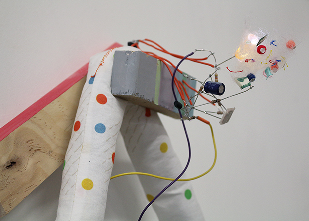

Robotic Arts Intro Fall 2019 (IA277.01)
- Instructor: Lucas Haroldsen (lharoldsen@mica.edu)
- Class Site: yasunaga.work/raif19
- syllabus: syllabus.pdf
- Resources: links.html
- Office hours: Wednesday 1 - 4pm
09/06: Looking closer --- [basic components]

Welcome back!
Today is the day of elements! We will go over and experiment with key componets to electronics.
We will go over together:
- What is electricity?
- Properties of electricity (water analogy)
- Elemental electrical components
- Prototyping materials
- Using a multimeter
- Polarity
- Ohm's law
- Reading resistor codes
- Reading schematics
- First circuit
- Soldering demo
- Soldering components to Perforated board
- Testing your board
- Trouble shooting
- Handmade switch
Schedule
Introduction
lecture/bread boarding
lunch
Talk about the reading
soldering demo
putting togehter the circuits

when thousands of cable crowded the skies
form, line, color, texture
 Bonnie Crawford
Soldering
Soldering is a skill, and you will get better with practice. Don't worry too much if it seems hard now. Take your time! We will go over together:
- Soldering temperature is typically 650 degrees F / 350 degrees C. It's very hot!
- Never leave a soldering iron on while unattended (our soldering stations only take about 10 seconds to reach temperature)
- Always use helping hands to hold wire and electronic components
- Most soldering jobs will only take a few seconds of contact. Check iron temperature if it's taking longer
- Do not use soldering irons to burn or melt things. We have a heat gun for that kind of work
- Do not eat or drink while soldering. Be sure to wash your hands to minimize possible lead exposure
- Use a fume extractor and goggles when soldering.
- Take your time!
HOMEWORK
Reading
- Medium from Abstracting Craft: The Practiced Digital Hand by Malcolm McCullough
Switch making - materialization of binary thinking
- Make two switches that fulfill the requirement of one of the followings. Two switches must be working with two different requirements from eachothers.
- It requires you to use a part of your body (not fingers) or gestures to activate
- It requires more than one person to activate
- require objects to activate